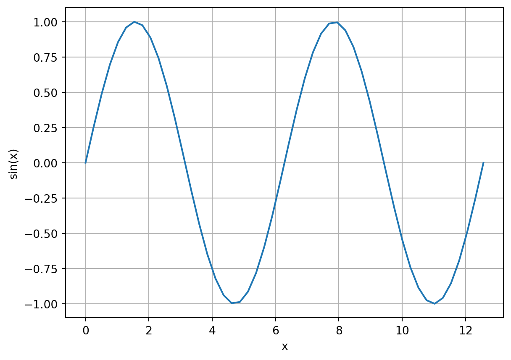
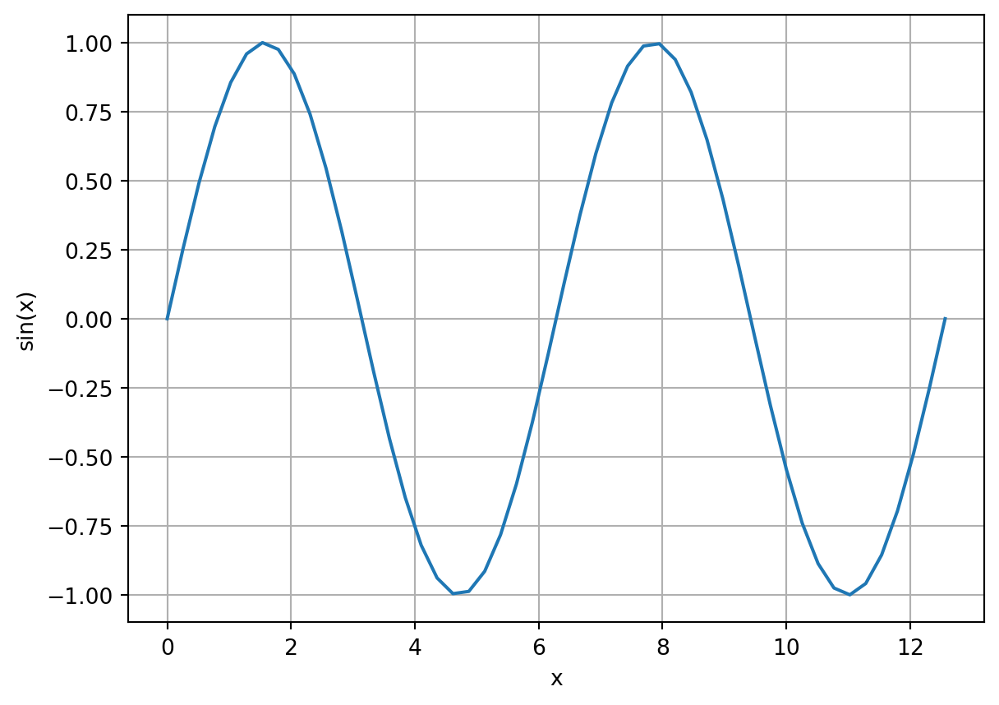
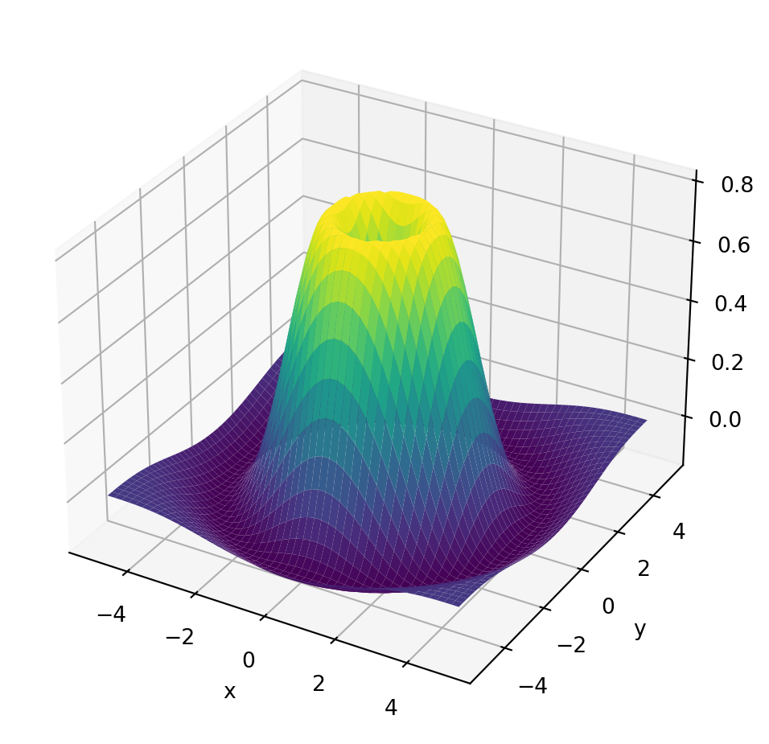

import numpy as np
import matplotlib.pyplot as plt
x = np.linspace(0, 4*np.pi, 50)
y = np.sin(x)
plt.plot(x, y)
plt.xlabel('x');
plt.ylabel('sin(x)');
plt.grid(1)
During this module, we will perform various computational experiments using Python. In order to make it easy for students to code in Python from a variety of devices (desktops, laptops, tablets, and even a phone), we use a cloud-computing system called Noteable that allows you to code from within a web browser. Students who like to code using their own Python setup on their computer can also do so. The goal of this problem class is to quickly get you up to speed with the basic Noteable system, and how to manipulate outputs. We should cover:
Use your Moodle course page to access the Noteable Python interface by clicking on the appropriate link in the course materials. Follow the instructions on the Moodle page to add the Git repository to your directory.
Navigate to the welcome screen for MA30287 and follow the instructions in Welcome.ipynb and FirstTimeSetup.ipynb in order to create your own local directory at /MA30287_workspace/
Navigate to the workspace folder. Click New -> Notebook. If asked, select the kernel Python 3 (ipykernel).
In the first line of input, select, in toolbar Code -> Markdown. This allows you to annotate your notebook with Markdown-style text input.
In the first line of input, type # Problem class 1. Then either type Shift + Enter or press the play button which will execute the line(s) of input. Your markdown text should render as a nicely formatted entry.
Rename the file to something appropriate, like problemclass01. You can do this by right-clicking the filename in the file manager and selecting Rename.
Proceed to the next question.
Three key Python packages used throughout this course are numpy, matplotlib, and scipy. Numpy provides array functionality, allowing you to naturally manipulate vectors and matrices. Matplotlib is a general plotting package for Python, allowing for the creation of (typically) 2D and 3D plots. And scipy provides algorithms for differential and integral operations allowing e.g. the solution of differential equations.
Here is a script to generate a graph of a sine curve.
import numpy as np
import matplotlib.pyplot as plt
x = np.linspace(0, 4*np.pi, 50)
y = np.sin(x)
plt.plot(x, y)
plt.xlabel('x');
plt.ylabel('sin(x)');
plt.grid(1)
Here is a script to generate a 3D plot.
import numpy as np
import matplotlib.pyplot as plt
from mpl_toolkits.mplot3d import Axes3D
# Define the function
def f(x, y):
return np.sin(np.sqrt(x**2 + y**2)) * np.exp(- (x**2 + y**2) / 10)
# Create grid
x = np.linspace(-5, 5, 50)
y = np.linspace(-5, 5, 50)
X, Y = np.meshgrid(x, y)
Z = f(X, Y)
# Plot the surface
fig = plt.figure(figsize=(8, 6))
ax = fig.add_subplot(111, projection='3d')
ax.plot_surface(X, Y, Z, cmap='viridis')
# Labels and title
ax.set_xlabel("x")
ax.set_ylabel("y")
ax.set_zlabel("z")
plt.show()
It would be good to demonstrate a workflow to understand how errors are diagnosed and studied (e.g. by printing simple variables throughout the script). Also, it would be good to show students how graphs can be zoomed in/out and/or rotated within the browser interface (this may be tricky in Noteable).
During the problem class, we will also show how to:
ExportMA30287.ipynb in the root directory of the Noteable system, and then downloading the result.Create an animation of the 2D or 3D plot, e.g. by making it so the waves ‘ripple’. Using a for loop, animate the wave. Then output the animation as a video file.